¿CÓMO LOGRAS QUE ALGUIEN
POR UN TEMA DE
CHINA?
Storytelling y creación de contenido · Tinta Camp III
PRESS START ▸Sábado 21 de noviembre · 10h00 a 12h30 · María Rosa Zury
Calentamiento
¿Quién vio un post sobre China esta semana?
¿Y quién lo leyó hasta el final?
Respóndelo en el chat.
El problema
No es que no le importe el mundo. Es que se cansó. Estas son las cuatro razones más comunes:
«Todo está mal y yo no puedo hacer nada».
«No sé a quién creerle».
«Cada medio me vende su bando».
«Es demasiada información y me agota».
Con la geopolítica se suma una quinta: «eso pasa lejos y no me toca».
Ves el titular «China y la región firman nuevo acuerdo de cooperación» y sigues bajando. No sabes qué significa ni por qué te debería importar.
La geopolítica no le interesa a nadie…
hasta que le toca el bolsillo, el barrio o el celular.
Nuestro trabajo: encontrar ese punto de contacto y contarlo sin mentir ni simplificar de más.
Misión del día
¿A quién le hablo y qué le importa?
Pensamiento crítico, enfoques e hipótesis.
Introducción, desarrollo y conclusión.
Storytelling y carrusel en texto. Lo gráfico, en el laboratorio final.
Mapa del juego
| Hora | Nivel | Qué haremos |
|---|---|---|
| 10h05 | N1 · ¿A quién le hablas? | Conocer a la audiencia |
| 10h30 | N2 · Pensamiento crítico | Preguntas, enfoques e hipótesis |
| 11h05 | N3 · Escribe tu artículo | Introducción, desarrollo y conclusión |
| 11h30 | Pausa | 10 minutos |
| 11h40 | N4 · Del artículo a la historia | Storytelling: logline, ganchos y estructura |
| 12h05 | Jefe final | Tu carrusel en texto |
Antes de empezar
Las misiones y el juego no están en esta presentación. Los vas a hacer en tu propio cuaderno, desde tu compu o tu celular, con tu grupo.
Haces una misión a la vez. Al terminarla ves tus respuestas en pantalla para compartirlas, y la siguiente se abre con la clave que daré en clase.
https://tintadigitalec-source.github.io/tintacamp/cuaderno-storytelling/
Link en el chat
NIVEL 1
¿A quién le hablas?
25 minConcepto 1
Cuando escribes para todos, no le hablas a nadie. Tu texto termina siendo genérico y nadie siente que es para él.
Las redes funcionan al revés: el algoritmo le muestra a cada persona lo que conecta con su vida.
Por eso, antes de pensar en el tema, piensa en la persona.
Para todos: «Información relevante para la ciudadanía». Para alguien: «Para ti, que estudias, trabajas y no tienes tiempo de leer noticias largas».
Concepto 2
Es un personaje ficticio que representa a la persona a la que quieres llegar.
Es ficticio, pero no inventado al azar: lo armas con lo que sabes de tu audiencia real, como tus estadísticas, los comentarios y las conversaciones.
Le pones nombre, edad y ciudad para poder imaginarlo leyendo tu post.
Si la mayoría de tus seguidores son universitarios de Quito que comentan sobre becas y empleo, tu reader persona podría ser «Andrea, 22, estudia Comunicación, se informa por TikTok y le preocupa conseguir trabajo».
Concepto 3
Edad, ciudad, a qué se dedica.
Ej.: Mateo, 19, Santiago de Chile, estudia ingeniería.TikTok, WhatsApp, radio, LinkedIn… Eso define el formato y el tono.
Ej.: YouTube y Twitch, de noche.Sus miedos, frustraciones y metas.
Ej.: Conseguir trabajo en tecnología.Series, fútbol, memes, música, humor, datos…
Ej.: Videos cortos que explican tecnología con humor.Concepto 4
Dos personas con la misma edad y la misma ciudad pueden informarse de formas opuestas. Lo que las diferencia son sus gustos, sus valores y sus hábitos.
MUJER, 30, LIMA
Ve noticias en TikTok, escucha podcasts de true crime y comparte memes.
MUJER, 30, LIMA
Solo lee newsletters de economía y desconfía de las redes.
Mismo dato demográfico, dos audiencias distintas.
Concepto 5
Una conversación, un mensaje, un encuentro con tu comunidad.
En tus redes y en las de otros medios. Ahí está lo que la gente siente.
Historias de Instagram o formularios como Tally.
Google Trends o AnswerThePublic muestran qué se pregunta la gente.
Si tu audiencia son universitarios: revisas los comentarios de tus últimos posts, haces una encuesta en historias («¿qué tema quieres que te expliquemos?») y miras qué buscan en Google Trends.
Ejemplo · paso a paso
26 años, Guayaquil. Emprende vendiendo ropa por Instagram.
TikTok e Instagram, de noche, después de despachar pedidos.
Que su negocio crezca, pagar sus cuentas y la inseguridad.
Videos cortos, humor, K-pop y tips de emprendimiento.
¿QUÉ LA HARÍA DETENER EL SCROLL?
Algo que le hable de su negocio, en un video corto y con humor.
Todavía no sabemos de qué tema le vamos a hablar. Pero ya sabemos cómo.
Ejemplo · tres personas, tres formas de informarse
DONA CIDA · SÃO PAULO
Se informa por audios de WhatsApp de su familia. Confía en lo que le manda su hija.
SOFÍA · SAN JOSÉ
Lee newsletters y X. Quiere datos, fuentes y nada de exageraciones.
DIEGO · LIMA
Vive en Threads, ama el fútbol y entiende todo mejor con un meme.
Antes de elegir un tema, ya sabes en qué formato y con qué tono hablarle a cada uno.
Misión 1 · instrucciones
Cada grupo recibe uno distinto. Volteen la tarjeta.
Quién es, dónde y cuándo se informa, qué le preocupa y qué lo engancha.
Formato, tono y estilo que funcionarían con él o ella.
¿A quién le preguntarían? ¿Qué comentarios leerían?
EN TU CUADERNO → MISIÓN 1 · ya está abierta
Misión 1 · los personajes
Toca una tarjeta para voltearla.
Lo que nos llevamos del Nivel 1
Tu grupo se queda con su personaje. En el siguiente nivel llega el tema.
NIVEL 2
Pensamiento crítico: de tema a hipótesis
35 minConcepto 1
Un tema no es una historia. Una buena pregunta, sí.
«China en América Latina» es un tema enorme. No sabes por dónde empezar. Una pregunta te dice exactamente qué buscar.
Tema: los Institutos Confucio. Pregunta: «¿Por qué tantas universidades latinoamericanas aceptan un instituto que paga China?»
Concepto 2
Concepto 3
Un enfoque es el lente con el que miras el tema. Cambia el lente y cambian las preguntas.
¿Cuál eliges? Depende de a quién le hablas.
Caso real de Tinta · un hecho, seis historias
En Tinta hicimos un carrusel sobre esta guerra. Antes de escribir, miramos el hecho con seis lentes:
Todos miraban la guerra. Tinta miró a China. Por eso funcionó.
Pausa de práctica
Ahora, pongámonos a prueba.
Dos hechos reales de la región. Tú buscas los enfoques primero; después revelamos los nuestros.
Práctica 1 · ¿qué enfoques ves?
EL HECHO
En la cumbre APEC, Claudia Sheinbaum le pidió a Xi Jinping un panda para el zoológico de Chapultepec.
Escribe en el chat: ¿desde qué lentes se puede contar esto? Tienes un minuto.
Práctica 2 · ¿qué enfoques ves?
EL HECHO
COSCO, una estatal china, tiene el 60 % del nuevo megapuerto de Chancay, en Perú.
¿Cuántos enfoques encuentras? ¿Cuál nadie está contando?
Concepto 4 · preguntas que entrenan el criterio
Pausa de práctica
Otra prueba, ahora con criterio.
Un hecho y tres titulares. Usa las seis preguntas que acabamos de ver.
Práctica 3 · un hecho, tres titulares
A · «China instala su base en el Pacífico sudamericano»
B · «Perú se convierte en la puerta de Asia hacia Sudamérica»
C · «Los pescadores de Chancay ven llegar el puerto más grande de la región»
Titulares inventados para el ejercicio. Preguntas clave: ¿cuál afirma algo que no está probado? ¿A quién le conviene cada versión? ¿Qué pregunta no hace ninguno?
Concepto 5 · la trampa
Todo es comercio e inversión.
Te pierdes el poder, la cultura y la gente.Todo lo chino es peligro.
Te pierdes la evidencia y caes en propaganda.Todo es oportunidad y desarrollo.
Te pierdes quién paga los costos.Si cuentas los Institutos Confucio solo como amenaza, te pierdes a los estudiantes que sí aprovechan la beca. Si los cuentas solo como oportunidad, te pierdes quién paga y con qué condiciones.
Concepto 6 · el criterio
Lo obvio ya lo dijeron otros medios.
Un enfoque sin datos es solo una opinión.
Vuelve a tu personaje del Nivel 1.
En un carrusel, sin simplificar de más.
Concepto 7
De todas las preguntas posibles, quédate con la que le importa a tu personaje. Para eso hiciste el Nivel 1.
DIEGO · ESTUDIANTE
«¿Qué condiciones trae una beca de un Instituto Confucio?»
SOFÍA · INGENIERA
«¿Hay libertad académica en un instituto que financia otro Estado?»
DONA CIDA · JUBILADA
«¿Por qué mi nieta quiere aprender chino?»
Mismo tema, tres preguntas, tres artículos distintos.
Concepto 8 · la hipótesis
La hipótesis es tu respuesta tentativa a la pregunta.
FÓRMULA
Pregunta → «Creo que ___ porque ___». Y luego la compruebas.
Pregunta: ¿Por qué tantas universidades aceptan un Instituto Confucio? Hipótesis: «Creo que lo aceptan porque les da profesores y becas que no podrían pagar solas, y eso pesa más que el debate sobre la influencia».
Caso real de Tinta · pregunta e hipótesis
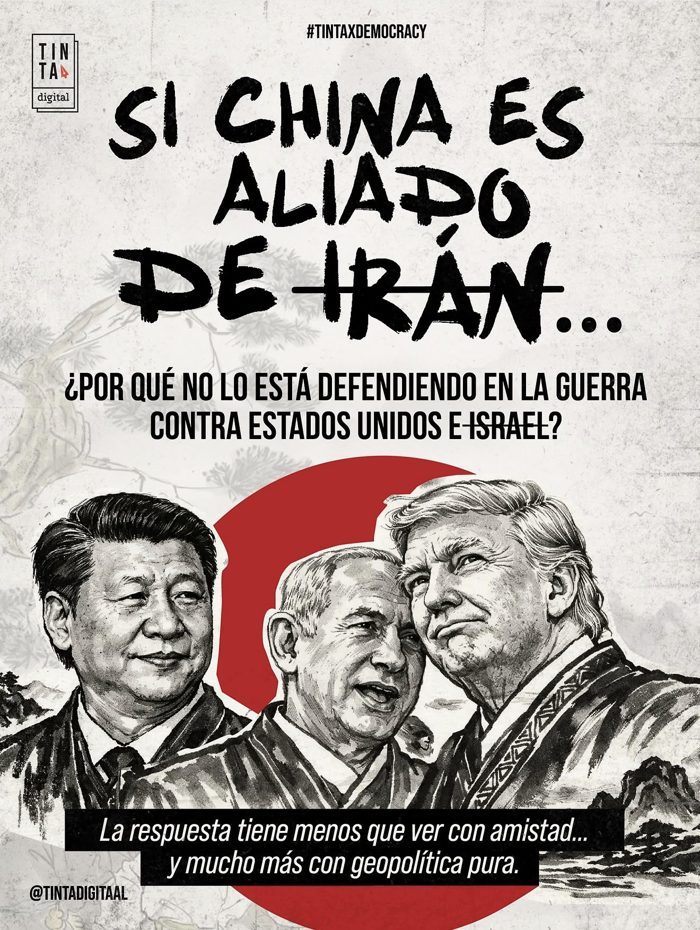
LA PREGUNTA
«Si China es aliado de Irán… ¿por qué no lo está defendiendo en la guerra contra Estados Unidos?»
LA HIPÓTESIS
«La respuesta tiene menos que ver con amistad… y mucho más con geopolítica pura».
La pregunta sale de una contradicción que la audiencia ya sentía. La hipótesis promete una explicación, no una opinión.
Concepto 9
«Los Institutos Confucio son malos». No se puede comprobar. Solo se cree o no se cree.
«Las universidades los aceptan porque les dan becas que no podrían pagar». Se puede comprobar preguntando, buscando datos y leyendo convenios.
Si tu hipótesis resulta falsa, no fallaste: encontraste una historia mejor.
Concepto 10
Hay pruebas que cualquiera puede revisar.
Ej.: Hay 44 institutos en la región.Hay fuentes, pero no coinciden.
Ej.: Si son una herramienta de influencia.Nadie independiente puede comprobarlo.
Ej.: Qué buscará China con ellos en 20 años.Tu pregunta tampoco debe traer la respuesta adentro. Dirigida: «¿Cómo nos manipula China con sus institutos?». Abierta: «¿Qué ganan y qué ceden las universidades que los aceptan?»
Juego rápido
En tu cuaderno hay seis afirmaciones sobre China y América Latina. Clasifica cada una y mira tu puntaje.
EN TU CUADERNO → JUEGO · CLAVE: FUENTES
Misión 2 · instrucciones
Temas de China en América Latina, en la siguiente pantalla.
Qué sabemos, quién lo dice, quién gana y pierde, de dónde viene, otras miradas, qué no sabemos.
Tres enfoques con una pregunta cada uno. ¿Cuál es la pregunta que nadie está haciendo? Elijan la que le importa a su personaje.
«Creo que ___ porque ___». ¿Cómo la comprobarían?
EN TU CUADERNO → MISIÓN 2 · CLAVE: PREGUNTA
Misión 2 · temas para elegir
Toca un cartucho para ver el punto de partida.
NIVEL 3
Escribe tu artículo
25 minConcepto 1
Si no lo puedes escribir, no lo puedes contar.
Antes del carrusel, escribe un artículo corto, como un ensayo. Te obliga a ordenar tus ideas, probar tu hipótesis y ver qué te falta.
Concepto 2
Contexto: qué pasa, en una o dos frases.
Pregunta: la que guía tu texto.
Tesis: tu hipótesis, dicha con claridad.
2 o 3 argumentos, cada uno con su evidencia y su fuente.
Un contraargumento: la mirada que no coincide contigo.
Responde la pregunta.
Di lo que no sabemos.
¿Y a tu audiencia qué? Qué significa para ella.
Concepto 3
Una sola afirmación por párrafo.
El dato, el documento o el testimonio que la respalda.
Quién lo dice, para que el lector pueda verificar.
Por qué importa para tu pregunta.
Ejemplo · la introducción
En América Latina y el Caribe hay 44 Institutos Confucio, según la Fundación Andrés Bello. Enseñan chino y ofrecen becas para estudiar en China. ¿Son solo una oportunidad educativa o también una herramienta de influencia? Este texto sostiene que son las dos cosas a la vez, y que entenderlo ayuda a decidir con los ojos abiertos.
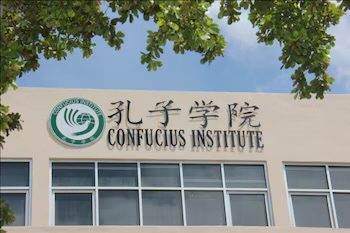
Ejemplo · el desarrollo
ARGUMENTO 1 · OPORTUNIDAD
Para muchos estudiantes, son la vía más directa para aprender chino y acceder a una beca: China envía los profesores y el material. (Voz de América)
ARGUMENTO 2 · INFLUENCIA
El investigador Jake Gilstrap sostiene que buscan crear una generación de futuros líderes que vean el mundo de forma más parecida a China. (Voz de América)
CONTRAARGUMENTO
La embajada china responde que son abiertos y transparentes, y que cumplen las normas de las universidades. (Voz de América)
Ejemplo · la conclusión
Los Institutos Confucio no son ni un regalo ni una amenaza por sí mismos. Todavía falta saber cuánto financia China en cada universidad y con qué condiciones. Para un estudiante como Diego, la pregunta útil no es si aceptar una beca, sino qué preguntar antes: quién paga, qué condiciones hay y qué libertad académica se mantiene.
Caso real de Tinta · el ensayo detrás del carrusel
INTRODUCCIÓN
Contexto: China e Irán firmaron en 2021 un acuerdo de cooperación a 25 años. Pregunta: si son aliados, ¿por qué China no lo defiende? Tesis: «tiene menos que ver con amistad… y mucho más con geopolítica pura».
DESARROLLO
Argumento 1: China comercia con Irán 13.400 millones (2024), pero más de 100.000 millones con Arabia Saudí y con Emiratos. Argumento 2: necesita que el petróleo siga pasando por Ormuz. Contraargumento: «Peeero ojo: eso no hace a China inocente ni buena onda».
CONCLUSIÓN
Responde la pregunta: «La competencia global ya no siempre pasa por intervenir, a veces pasa por esperar y calcular».
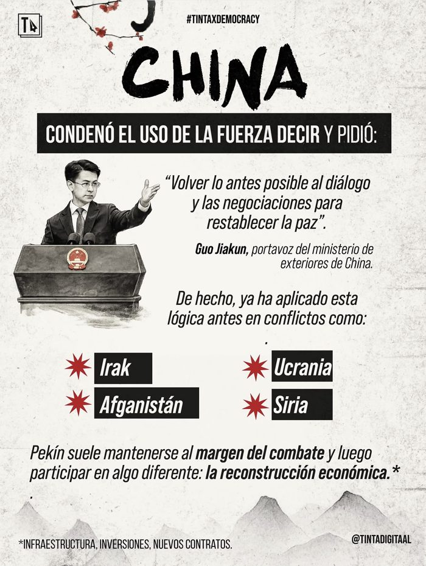
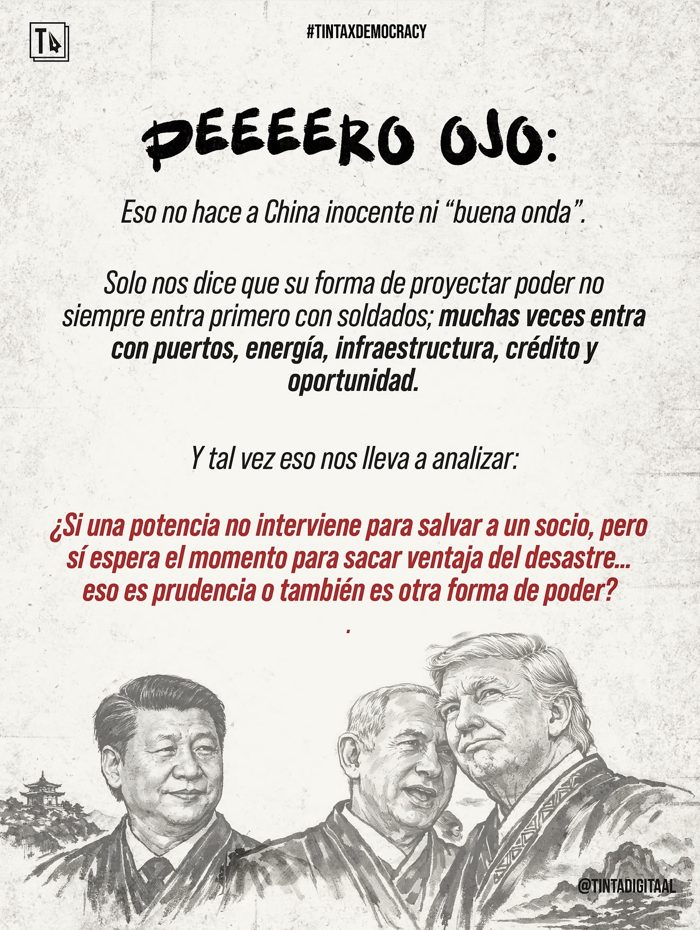
Las mismas tres partes. El contraargumento va dentro del desarrollo.
Concepto 4
Cada argumento necesita su dato y su fuente.
Sin contraargumento, tu texto es propaganda.
Vuelve a tu pregunta y contéstala.
Si no se sabe, dilo. Eso también informa.
Misión 3 · instrucciones
Contexto, pregunta y su hipótesis como tesis.
Dos argumentos con evidencia y fuente, más un contraargumento.
Respondan, digan lo que no saben y vuelvan a su personaje.
Corto y claro. Anoten sus fuentes.
EN TU CUADERNO → MISIÓN 3 · CLAVE: ENSAYO
PAUSA
10 minutos. Vuelve listo para convertir tu artículo en historia.
NIVEL 4
Storytelling digital: del ensayo al carrusel
Clase 2Antes de empezar · lo que ya tienes
| Lo que ya tienes | Para qué sirve hoy |
|---|---|
| Tu audiencia | A quién le hablas de tú, en qué tono y en qué red. |
| Tu enfoque y tu pregunta | De ahí sale la tensión de tu historia. |
| Tu hipótesis | Lo que tu gancho promete y tu carrusel demuestra. |
| Tu ensayo | Todo el contenido de tu carrusel: no hay que inventar nada. |
| Tu contraargumento | El «Peeero ojo» de tu carrusel. |
Tengan abierto su ensayo: hoy lo convertimos en carrusel, en cinco pasos.
Storytelling digital · paso 1 de 5
ESTÁS AQUÍ
1
Qué es storytelling digital
2
Encuentra la tensión
3
Conviértela en gancho
4
Arma el recorrido
5
Dale tu voz
Paso 1 · qué es storytelling digital
Es contar tu análisis como una conversación con tu audiencia.
De tú, como a alguien que conoces. Para eso hiciste el Nivel 1.
No necesitas inventar un personaje: quien lee se ve en la pregunta.
De una tensión que siente a una respuesta que no tenía, una slide a la vez.
Paso 1 · ejemplo
TEXTO ACADÉMICO
«Los Institutos Confucio constituyen un instrumento de diplomacia cultural de China en la región».
Correcto, pero lejano: no le habla a nadie.
NOTA DE PERIODISTA
«Diego tiene 23 años y estudia en Lima. Un día vio un afiche en su universidad…».
Te cuenta la vida de otro. En redes, la gente pasa de largo.
STORYTELLING DIGITAL, ESTILO TINTA
«¿Te ofrecieron una beca para estudiar chino gratis? Antes de decir que sí, lee esto».
Te habla a ti. Si eres estudiante, te reconoces sola o solo.
Paso 1 · lo que no es
Un artículo, una tesis o un informe pegados en slides.
Ej.: el convenio completo copiado en slides, sin conflicto, sin orden y sin una persona adentro.Información técnica o corporativa sin personas.
Ej.: «La cooperación bilateral se fortalece en el marco de…»Un mensaje que te dice qué creer sin mostrarte las pruebas.
Ej.: «China viene a salvarnos» o «China viene a robarnos».Un gancho que promete algo que el contenido no cumple.
Ej.: «¡China ya controla tu país!»Storytelling digital · paso 2 de 5
LISTO
1
Qué es storytelling digital
ESTÁS AQUÍ
2
Encuentra la tensión
3
Conviértela en gancho
4
Arma el recorrido
5
Dale tu voz
Paso 2 · ya conoces la tensión
Porque algo no cuadra con lo que esperabas, y quieres saber cómo se resuelve.
Esperas: que Ariel sea feliz bajo el mar, donde lo tiene todo.
Pero: sueña con vivir en la superficie.
Por eso sigues mirando: ¿qué está dispuesta a perder?
Esperas: que un ogro que quiere estar solo se quede en su pantano.
Pero: termina rescatando a una princesa.
Por eso sigues mirando: ¿por qué lo haría?
Esperas: que Woody siga siendo el favorito.
Pero: llega Buzz y le quita el lugar.
Por eso sigues mirando: ¿qué hará para no perderlo?
Eso es una tensión. En un carrusel funciona igual: es lo que hace que la gente siga deslizando.
Paso 2 · la tensión en un análisis geopolítico
La tensión es la distancia entre lo que tu audiencia ve y lo que tu análisis demostró.
LO QUE TU AUDIENCIA VE
Clases de chino y becas gratis en su universidad.
←— LA TENSIÓN —→
la distancia que tu carrusel va a recorrer
LO QUE TU ANÁLISIS DEMOSTRÓ
Una herramienta de poder blando de China.
Mientras más grande la distancia, más fuerte la tensión. Tu trabajo es hacer que tu audiencia la note… y quiera recorrerla contigo.
Paso 2 · el mapa: de tu análisis a la tensión
1 · TU TESIS
¿Qué demostraste?
Ya la tienes: es la tesis de tu ensayo.
→
2 · LA SUPERFICIE
¿Qué ve hoy tu audiencia?
Lo que cree, lo que repite, lo que parece obvio.
→
3 · EL DATO QUE CHOCA
¿Qué la haría dudar?
Una contradicción, una comparación o una pregunta por quién gana.
→
4 · LA TENSIÓN
¿Qué pregunta le queda?
La pregunta que tu carrusel va a responder.
Y tu carrusel recorre el camino de vuelta: de la pregunta (4) a las pruebas, hasta demostrar tu tesis (1).
Paso 2 · ejemplo resuelto · caso real de Tinta
1 · TU TESIS
China no arriesga por amistad: calcula.
Protege su comercio, su petróleo y su lugar en el mundo.
→
2 · LA SUPERFICIE
«China e Irán son aliados».
Es lo que la mayoría da por hecho.
→
3 · EL DATO QUE CHOCA
Empezó la guerra y China solo pidió diálogo.
Una contradicción: aliado, pero no lo defiende.
→
4 · LA TENSIÓN
«Si China es aliado de Irán… ¿por qué no lo está defendiendo?»
Es la portada del carrusel.
LAS PRUEBAS QUE RECORRE EL CARRUSEL
El comercio con Irán frente al del Golfo · el petróleo · el estrecho de Ormuz · cómo reaccionó antes en Irak, Ucrania y Siria · «Peeero ojo».
Paso 2 · ahora con nuestro tema · lo armamos juntos
1 · TU TESIS
Los Institutos Confucio son una forma de poder blando de China.
Enseñan su idioma y su cultura para ganar cercanía e influencia.
→
2 · LA SUPERFICIE
«Clases de chino y becas gratis».
Una oportunidad y ya.
→
3 · EL DATO QUE CHOCA
Los paga una fundación ligada al gobierno chino, y en EE. UU. casi todos cerraron.
Una comparación y una pregunta por quién gana.
→
4 · LA TENSIÓN
«Si es gratis… ¿quién lo está pagando y qué gana con eso?»
Lo que el carrusel va a responder.
LAS PRUEBAS QUE RECORRE EL CARRUSEL
Quién financia · qué es el poder blando · por qué cerraron en EE. UU. · qué dice la embajada · lo que todavía no sabemos.
Paso 2 · cómo hacer que tu audiencia dude
Dos hechos que no cuadran juntos.
Ej.: es su aliado… pero no lo defiende.Algo que pasa allá y no aquí, o antes y no ahora.
Ej.: en EE. UU. cerraron casi todos; aquí hay 44.Preguntar quién paga, quién se beneficia o quién calla.
Ej.: si es gratis, ¿quién lo paga y qué gana?Busca el recurso en tu ensayo: en tus datos, en tu contraargumento o en lo que no sabemos.
Paso 2 · cuatro errores frecuentes
✗ «La influencia de China en América Latina».
✓ «Si es gratis, ¿quién la está pagando?»
✗ Una tensión que solo le importa a un experto.
✓ Parte de lo que tu audiencia cree o vive.
✗ «China quiere controlar a nuestros estudiantes».
✓ Dos cosas ciertas que chocan: oportunidad e influencia.
✗ Una promesa que tu ensayo no puede probar.
✓ La tensión sale de tu ensayo y tu carrusel la responde.
Storytelling digital · paso 3 de 5
LISTO
1
Qué es storytelling digital
LISTO
2
Encuentra la tensión
ESTÁS AQUÍ
3
Conviértela en gancho
4
Arma el recorrido
5
Dale tu voz
Paso 3 · conviértela en gancho
En la portada del carrusel, en la primera línea del texto y en los primeros 3 segundos de un video.
Abre la tensión sin resolverla. Quien lee desliza para saber la respuesta.
Al final. Va primero, pero solo cuando sabes tu recorrido sabes qué puedes prometer.
La tensión: si es gratis, ¿quién la está pagando? El gancho: «¿Te ofrecieron una beca para estudiar chino gratis? Antes de decir que sí, lee esto».
Paso 3 · los cuatro ingredientes
De tú, con su mundo y sus palabras.
Ej.: «¿Te ofrecieron una beca…?»Plantea la pregunta, no la respuesta.
Ej.: «Antes de decir que sí, lee esto».Una cifra, un lugar, algo que se ve.
Ej.: «44 institutos», «tu universidad».Lo que promete, el carrusel lo cumple.
Si exagera, es clickbait. En temas de China, es desinformación.La prueba final: ¿tu audiencia dejaría de hacer scroll en 3 segundos?
Paso 3 · caso real de Tinta · la portada, desarmada
«Si China es aliado de Irán… ¿por qué no lo está defendiendo en la guerra contra EE. UU.?»
A quien ya ve la guerra en su feed y tiene esa duda. No necesita un personaje.
Aliado en el papel, pero no lo defiende. No da la respuesta.
Tres países que todos conocen, en una sola pregunta.
El carrusel responde la pregunta con datos. Subtítulo: «Tiene menos que ver con amistad… y mucho más con geopolítica pura».
Paso 3 · misma tensión, tres audiencias, tres ganchos
«¿Te ofrecieron una beca para estudiar chino gratis? Antes de decir que sí, lee esto».
Les habla de una decisión que tienen enfrente.«En EE. UU. cerraron casi todos sus Institutos Confucio. En la región hay 44. ¿Por qué aquí siguen abiertos?».
Les da cifras y una contradicción.«¿Tu hijo quiere aprender chino gratis en la universidad? Te cuento quién lo paga».
Les habla de su familia, como en una conversación.Misma investigación, misma tensión. Lo que cambia es a quién le hablas.
Paso 3 · práctica · ¿cuál funciona para estudiantes universitarios?
GANCHO A
«China está comprando a tus universidades».
✗ No es honesto: el carrusel no puede probar eso. Es clickbait.
GANCHO B
«Institutos Confucio: análisis de la cooperación educativa».
✗ No le habla a nadie y no abre ninguna tensión.
GANCHO C
«Diego, de 23 años, vio un afiche en su universidad».
✗ Te cuenta la vida de otro: no te habla a ti.
GANCHO D
«¿Te ofrecieron una beca para estudiar chino gratis? Lo que nadie te dice es quién la paga».
✓ Te habla directo, abre la tensión, es concreto y el carrusel lo cumple.
Storytelling digital · paso 4 de 5
LISTO
1
Qué es storytelling digital
LISTO
2
Encuentra la tensión
LISTO
3
Conviértela en gancho
ESTÁS AQUÍ
4
Arma el recorrido
5
Dale tu voz
Paso 4 · arma el recorrido
Tu tensión, dicha en una frase.
Qué pasó y qué hay que saber. «Primero: sí…»
Un argumento por slide, con su dato y su fuente. Tantos como tu análisis necesite.
La otra mirada: «Peeero ojo».
Lo que no sabemos y qué tiene que ver con tu audiencia.
Una pregunta para comentar.
La profundidad no se recorta: se reparte. Una idea por slide: un titular corto y hasta 80 palabras. El carrusel de Tinta usa unas 60 por slide.
Paso 4 · qué entra y qué no
¿Esto ayuda a mi audiencia a resolver la tensión?
No se pierde: puede ser otro post.
Paso 4 · caso real de Tinta · el carrusel completo, 15 slides
El conflicto.
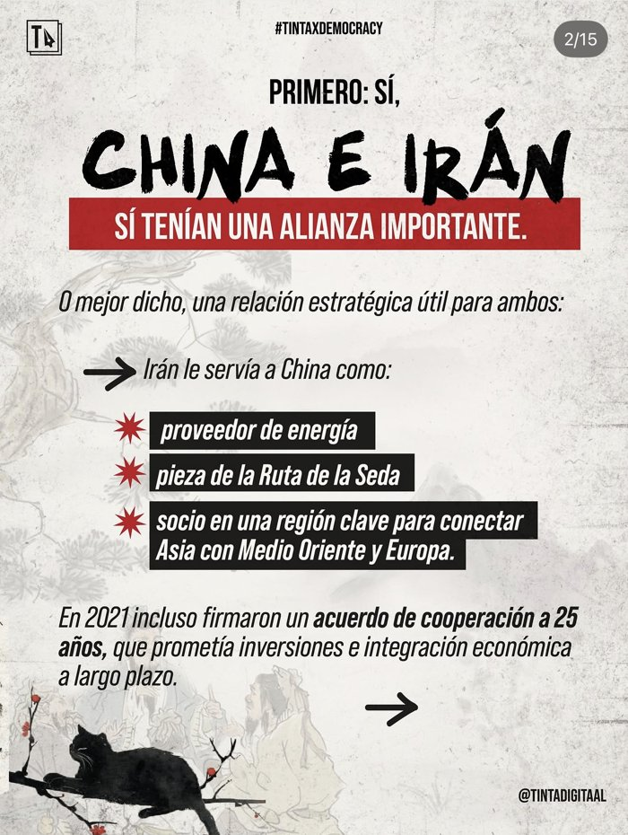
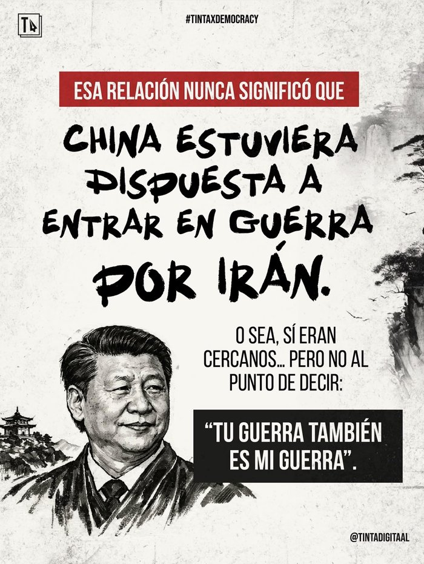
Qué sí era la alianza y hasta dónde llegaba.
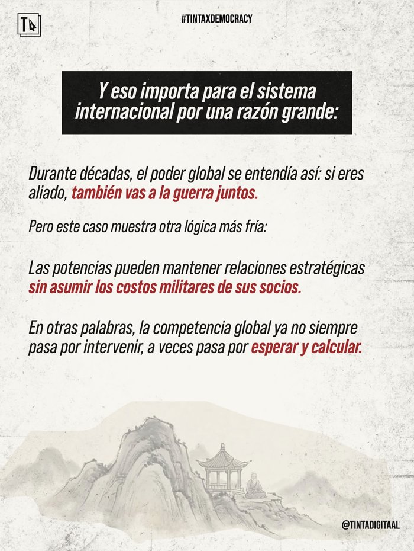
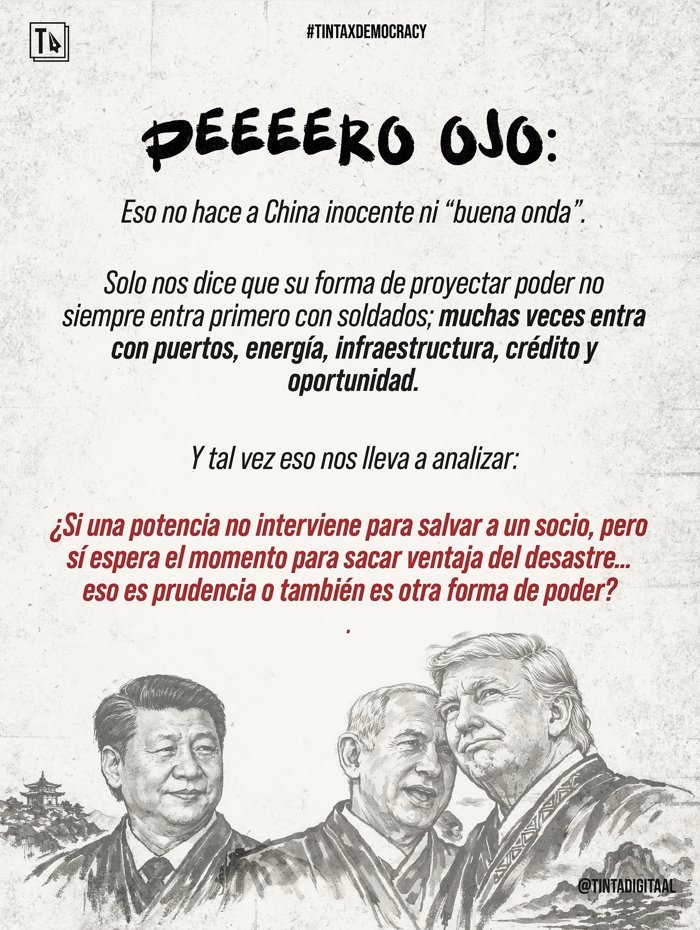
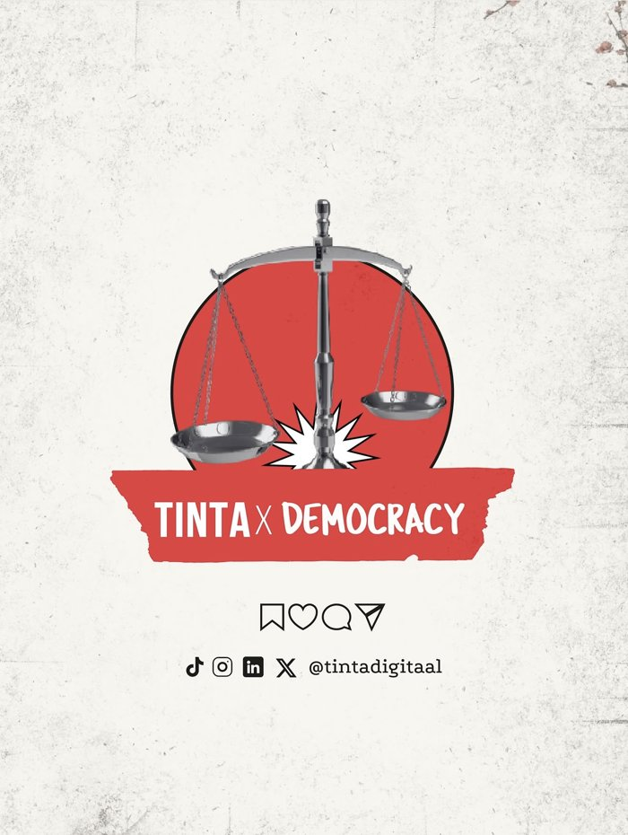
Qué significa, «Peeero ojo» y la pregunta final.
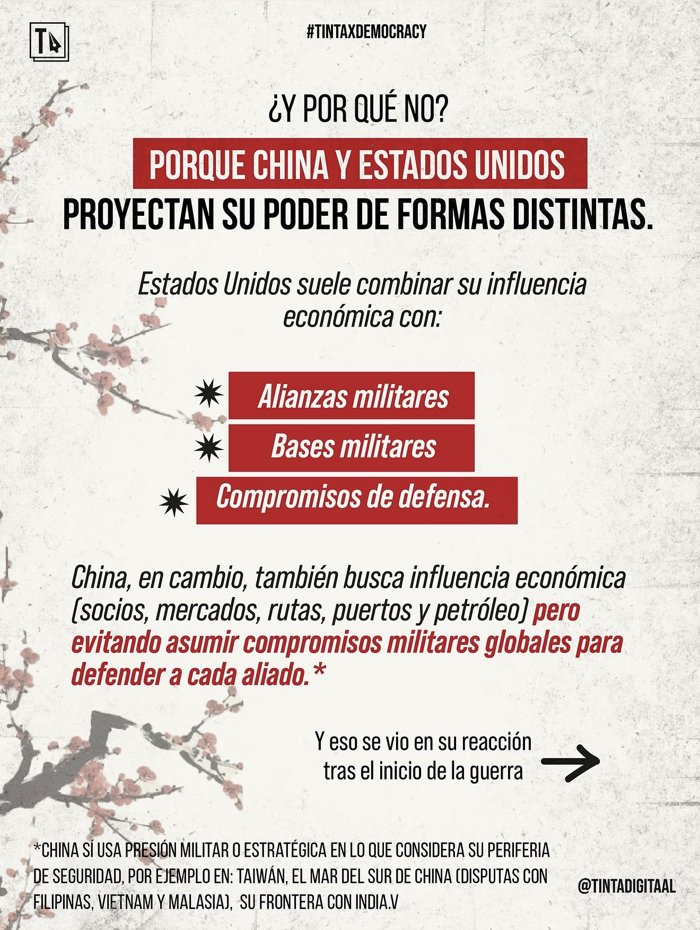
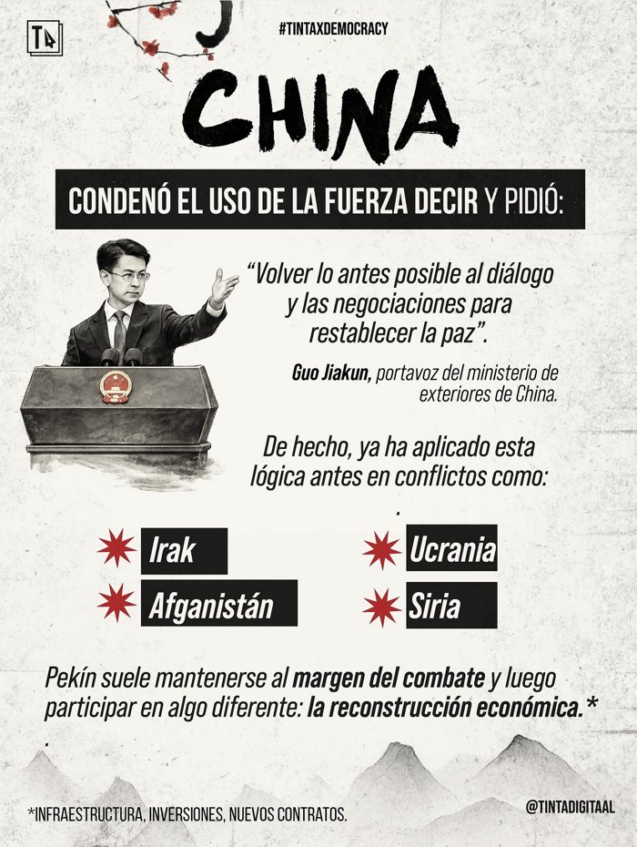
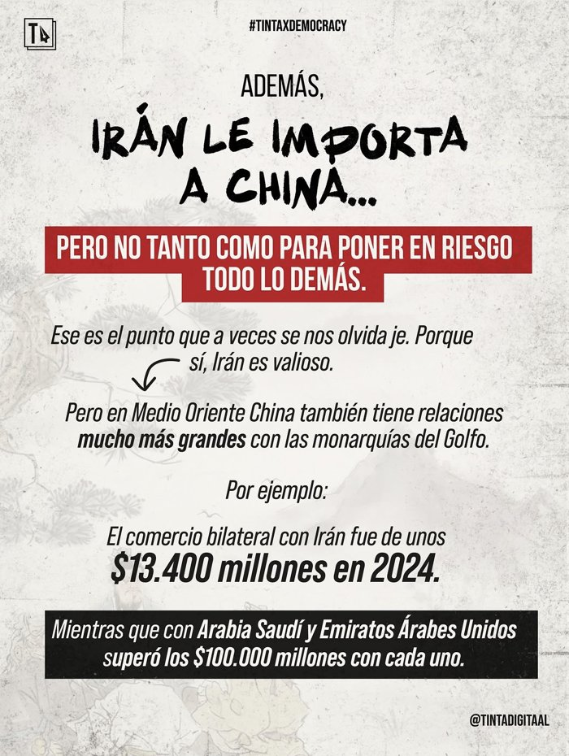
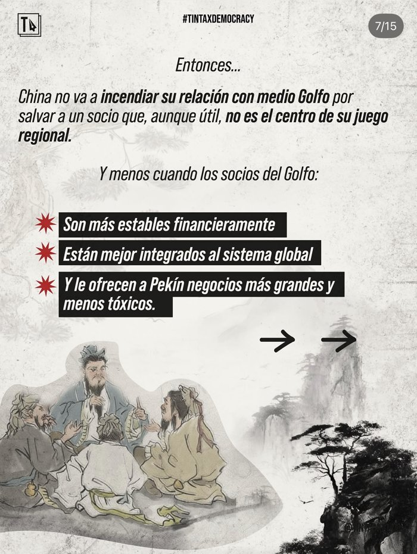
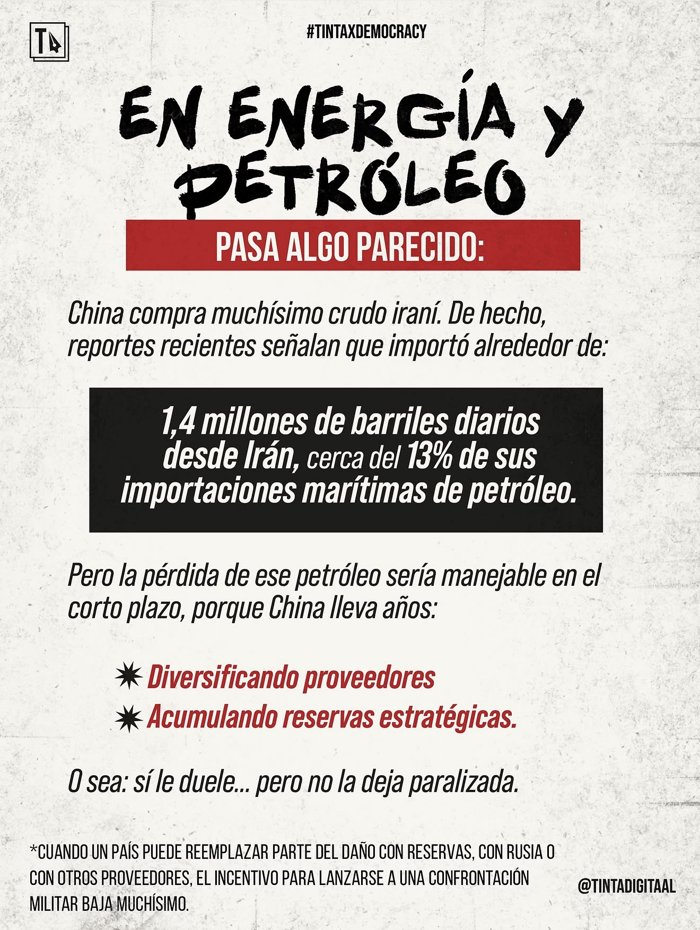
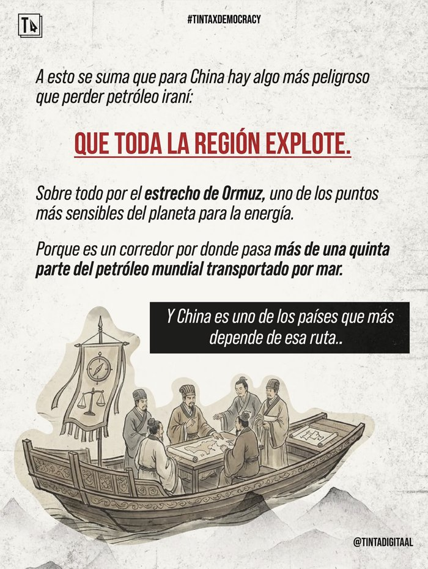
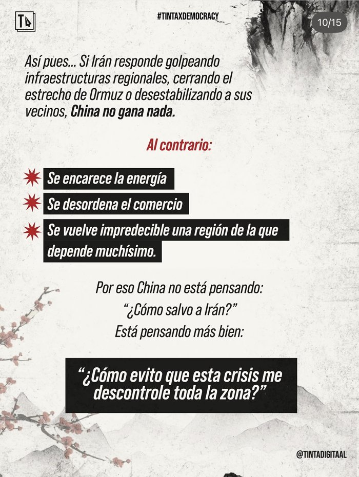
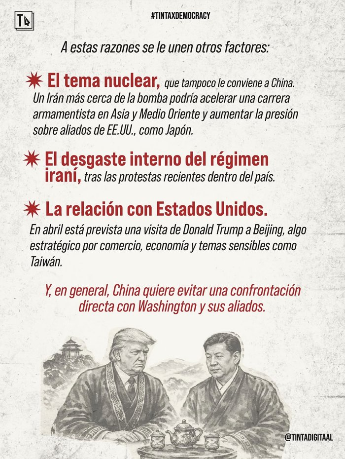
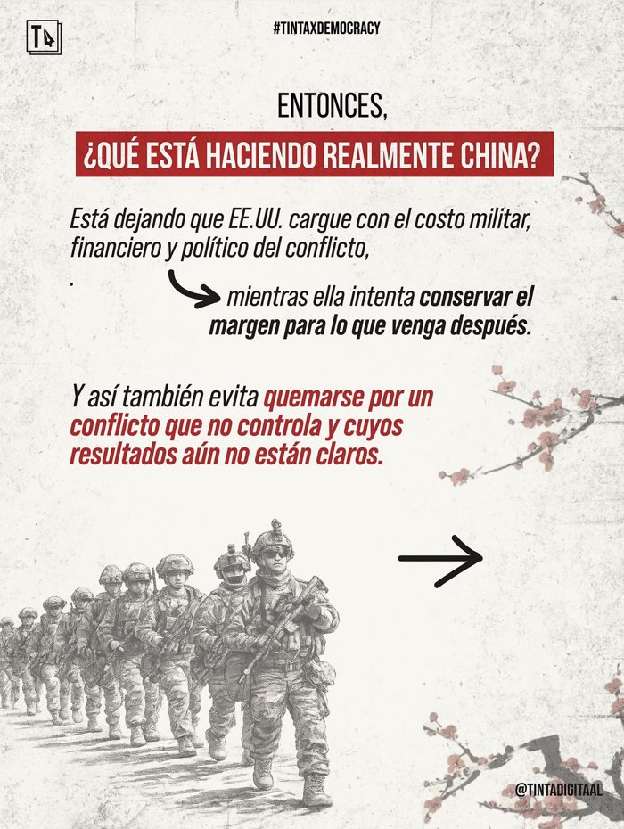
Poder distinto · reacción y precedentes · comercio · el Golfo · petróleo · Ormuz · riesgo regional · otros factores · qué hace realmente China.
Paso 4 · caso real de Tinta · por qué funcionó
Una pregunta y una tesis. Nueve argumentos con datos, fuentes y precedentes. Un contraargumento. Lo que significa para el sistema internacional.
Un conflicto en la portada. Un protagonista con un dilema: China. Una idea por slide. Conectores que empujan a seguir. Voz de amigo. Una pregunta al final.
En redes no se simplifica el análisis: se reparte en más slides y se cuenta como historia.
Storytelling digital · paso 5 de 5
LISTO
1
Qué es storytelling digital
LISTO
2
Encuentra la tensión
LISTO
3
Conviértela en gancho
LISTO
4
Arma el recorrido
ESTÁS AQUÍ
5
Dale tu voz
Paso 5 · dale tu voz
| En el ensayo | En el carrusel |
|---|---|
| «Los Institutos Confucio constituyen un instrumento de diplomacia cultural». | «Enseñan chino gratis. ¿Y quién paga eso?» |
| «El intercambio comercial asciende a 13.400 millones de dólares». | «China le vende a Irán 13.400 millones… pero a Arabia Saudí, más de 100.000 millones». |
| «No obstante, cabe señalar que…» | «Peeero ojo: eso no la hace buena onda». |
«Tu beca», «tu universidad».
Una idea por frase, sin siglas sin explicar.
«Primero: sí», «Entonces…», «Peeero ojo».
Compáralas con otra cifra o con algo cotidiano.
Aplicación · del ensayo al carrusel
| Paso | Qué hicimos | En el carrusel |
|---|---|---|
| 1 · Audiencia | Estudiantes universitarios, de tú, en Instagram y TikTok. | Todo el carrusel |
| 2 · Tensión | «Si es gratis, ¿quién la está pagando… y por qué?» | Se responde de la slide 2 a la 12 |
| 3 · Gancho | La tensión dicha en una frase, con los 4 ingredientes. | Slide 1 |
| 4 · Recorrido | Contexto, 6 argumentos, contraargumento, qué significa y cierre. | Slides 2 a 14 |
| 5 · Voz | «Primero: sí», «Ahora, la pregunta incómoda», «Peeero ojo». | En cada slide |
Aplicación · el carrusel de los Institutos Confucio, estilo Tinta (1 de 3)
SLIDES 1
Gancho
SLIDES 2–3
Contexto
SLIDES 4–9
Desarrollo
SLIDES 10
Contraargumento
SLIDES 11–12
Qué significa
SLIDES 13–14
Cierre
#TINTAXDEMOCRACY1/14
¿Clases de chino gratis en tu universidad?
Antes de inscribirte, pregúntate quién las paga… y qué gana con eso.
SLIDE 1 · GANCHO
#TINTAXDEMOCRACY2/14
Primero: sí
Es una oportunidad real
Los Institutos Confucio enseñan chino, organizan festivales y dan becas para estudiar en China. Muchas universidades de la región no podrían pagar eso solas.
SLIDE 2 · CONTEXTO
#TINTAXDEMOCRACY3/14
Y no son pocos
En la región hay 44
En universidades como la PUCP en Lima, la USFQ en Quito o la UCR en Costa Rica. Puede que haya uno en tu campus.
Fuente: Fundación Andrés Bello.
SLIDE 3 · CONTEXTO
#TINTAXDEMOCRACY4/14
Ahora, la pregunta incómoda
¿Quién los paga?
Desde 2020 los financia una fundación ligada al Ministerio de Educación de China. O sea: detrás no hay una ONG cualquiera, hay un Estado.
Fuente: Chinese International Education Foundation (2020).
SLIDE 4 · ARGUMENTO
#TINTAXDEMOCRACY5/14
¿Y por qué lo haría?
Porque enseñar tu idioma también es poder
Se llama poder blando: ganar cercanía e influencia sin imponer nada. Ojo: no lo hace solo China; EE. UU., Francia o Alemania también tienen sus institutos.
Fuente: Joseph Nye, «Soft Power» (2004).
SLIDE 5 · ARGUMENTO
Aplicación · el carrusel de los Institutos Confucio, estilo Tinta (2 de 3)
SLIDES 1
Gancho
SLIDES 2–3
Contexto
SLIDES 4–9
Desarrollo
SLIDES 10
Contraargumento
SLIDES 11–12
Qué significa
SLIDES 13–14
Cierre
#TINTAXDEMOCRACY6/14
Ojo, que hay una diferencia
Están dentro de tu universidad
La Alianza Francesa o el Instituto Goethe tienen sus propias sedes. Los Institutos Confucio funcionan dentro de las universidades, con un convenio con cada una.
SLIDE 6 · ARGUMENTO
#TINTAXDEMOCRACY7/14
Y eso encendió las alarmas en EE. UU.
De 118 a casi ninguno
Allá llegaron a ser 118. Para 2022, 104 habían cerrado o estaban cerrando.
Fuente: National Association of Scholars (2022).
SLIDE 7 · ARGUMENTO
#TINTAXDEMOCRACY8/14
¿Por qué tantos cierres?
Dos razones
En 2020, EE. UU. declaró «misión extranjera» al centro que los coordinaba. Y varios convenios tenían cláusulas para no revelar cuánto ponía China.
Fuente: Departamento de Estado de EE. UU. (2020); NAS vía VOA.
SLIDE 8 · ARGUMENTO
#TINTAXDEMOCRACY9/14
Entonces…
Allá los cierran. Aquí siguen abiertos.
En América Latina casi no hemos tenido esa conversación en público. Y eso es justo lo que vale la pena preguntarse.
SLIDE 9 · ARGUMENTO
#TINTAXDEMOCRACY10/14
Peeero ojo
Eso no los convierte en espías
La embajada china dice que son abiertos y transparentes. Y según la GAO, el FBI no los considera una amenaza a la seguridad nacional.
Fuente: GAO, informe de 2023.
SLIDE 10 · CONTRAARGUMENTO
Aplicación · el carrusel de los Institutos Confucio, estilo Tinta (3 de 3)
SLIDES 1
Gancho
SLIDES 2–3
Contexto
SLIDES 4–9
Desarrollo
SLIDES 10
Contraargumento
SLIDES 11–12
Qué significa
SLIDES 13–14
Cierre
#TINTAXDEMOCRACY11/14
Lo que todavía no sabemos
La parte que nadie ha contado
Cuánto pone China en cada universidad de la región, con qué condiciones se firmaron los convenios y quién decide qué se enseña.
SLIDE 11 · QUÉ SIGNIFICA
#TINTAXDEMOCRACY12/14
Entonces, ¿te inscribes o no?
Entra con los ojos abiertos
Una beca puede cambiarte la vida. Solo pregunta antes quién la financia, qué te piden a cambio y si puedes estudiar cualquier tema.
SLIDE 12 · QUÉ SIGNIFICA
#TINTAXDEMOCRACY13/14
¿Cultura… o influencia?
¿O las dos cosas a la vez? Te leo en comentarios.
SLIDE 13 · CIERRE
#TINTAXDEMOCRACY14/14
Tinta x Democracy
Síguenos para más análisis que te cuentan el mundo sin rodeos.
SLIDE 14 · FIRMA
Misión 4 · instrucciones
Su tesis, lo que ve su audiencia, el dato que choca y la pregunta que les queda.
Directo a su audiencia y con los 4 ingredientes.
El que haría que su audiencia deje de hacer scroll.
Qué argumentos de su ensayo van en el desarrollo, uno por slide.
EN TU CUADERNO → MISIÓN 4 · CLAVE: HISTORIA
JEFE FINAL
Tu carrusel en texto
25 minInstrucciones
En tu cuaderno, con la estructura base y tu mejor gancho, sin simplificar: un argumento por slide. Ves la vista previa en un celular.
Siete puntos antes de publicar.
Presiona «Copiar todo» y pégalo en el WhatsApp del grupo con tu nombre, caso y personaje.
Dos o tres personas lo leen en voz alta. El resto comenta con el checklist.
EN TU CUADERNO → JEFE FINAL · CLAVE: CARRUSEL
Checklist para el feedback
Continue?
Hoy sales con el texto. En el laboratorio práctico final lo convertimos en pieza gráfica.
Guarda tu carrusel en texto y mándalo al grupo de WhatsApp. En el laboratorio práctico final lo convierten en carrusel o video para publicarlo, porque lo que no se publica no informa a nadie.
«Un investigador no está obligado a tener una conclusión sobre todo. Está obligado a que se pueda auditar cómo llegó a la que tiene».
Bernardo Gortaire · Tinta Camp
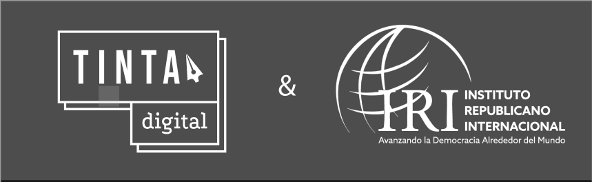